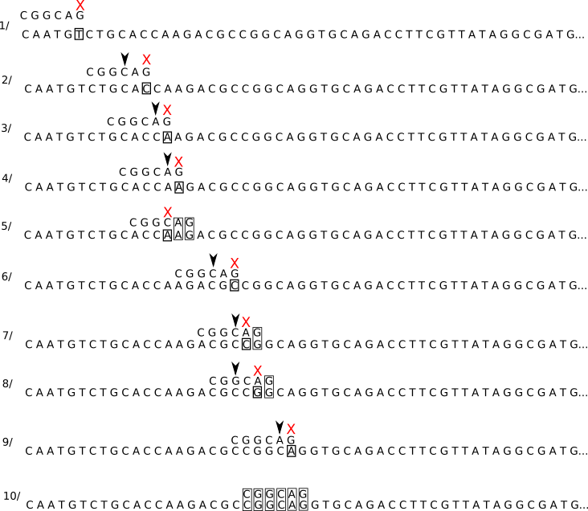

- Algorithme naif de Recherche Fiche de cours
- Algorithme de Boyer Moore
Introduction
Les algorithmes qui permettent de trouver une sous-chaine de caractères dans une chaine de caractères plus
grande sont des "grands classiques" de l'algorithmique.
On parle aussi de recherche d'un motif (sous-chaine)
dans un texte.
Voici un exemple : Soit le texte suivant :
"Les sanglots longs des violons de l'automne blessent mon coeur d'une langueur monotone. Tout suffocant et blême, quand sonne l'heure, je me souviens des jours anciens et je pleure."
Question : le motif "vio" est-il présent dans le texte ci-dessus, si oui, en quelle(s) position(s) ? (la numérotation d'une chaine de caractères commence à zéro et les espaces sont considérés comme des caractères)
Réponse : on trouve le motif "vio" en position 23
Les algorithmes de recherche textuelle sont notamment utilisés en bioinformatique
pour la recherche de gènes dans l’ADN (Acide Désoxyribonucléique).
 |
 |